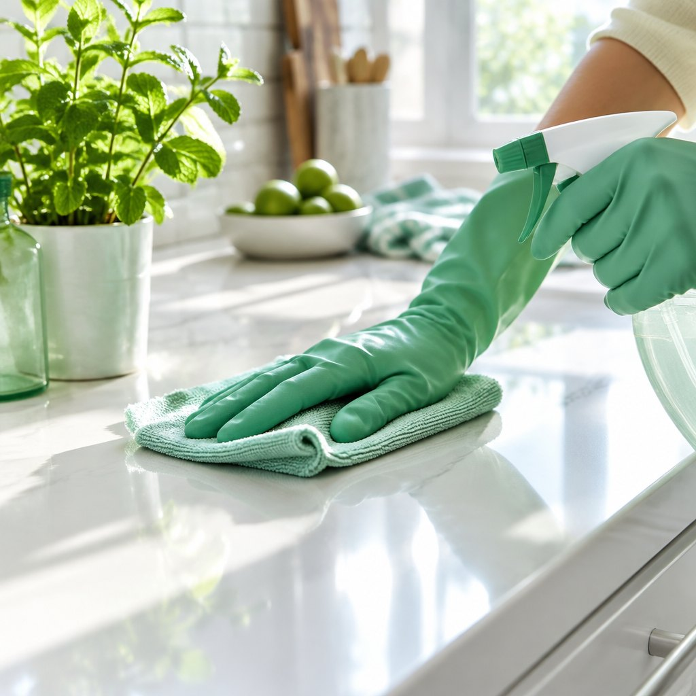

Два формата и точечные услуги
Поддерживающая уборка держит порядок, генеральная возвращает чистоту целиком. Плюс разовые услуги: окна, санузлы, ковры, люстры.
Поддерживающая и генеральная
Одна и та же квартира убирается по-разному. Разница — в глубине работы.
Поддерживающая — регулярный порядок: пыль, полы, кухня, санузел, вынос мусора.
Генеральная — то же плюс труднодоступные места, затирка, техника, люстры и плинтусы.
- 1 комната: 253 / 380 BYN
- 2 комнаты: 334 / 495 BYN
- 3 комнаты: 414 / 610 BYN
- 4 комнаты: 483 / 713 BYN

Что именно делается
Шесть зон, которые прохожу по порядку.
- Пыль на всех открытых поверхностях, полках и подоконниках
- Пылесос и влажная уборка пола, включая углы
- Зеркала и стеклянные поверхности без разводов
- Плинтусы, радиаторы, выключатели и двери
- Уборка под кроватью и за мебелью, где можно добраться
- Обезжиривание фасадов и столешницы
- Плита, духовка и вытяжка снаружи и внутри по договорённости
- Мойка и смеситель без налёта
- Холодильник снаружи, микроволновка внутри
- Мытьё плитки и пола, включая стыки
- Удаление налёта и ржавчины с плитки и затирки
- Унитаз, ванна или душевая, раковина
- Хром и стекло без капель
- Зеркала и полки, вентиляционная решётка
- Дезинфекция поверхностей
- Пыль с обувных полок и вешалок
- Зеркала, двери и ручки
- Плинтусы и пол, включая пороги
- Коврики: выбить и пропылесосить
- Подоконники и рамы
- Пол и ограждение
- Мытьё остекления — по отдельному прайсу
- Уборка после ремонта балкона — по договорённости
- Люстры и светильники — по прайсу разовых услуг
- Верх шкафов и антресоли
- Вентиляционные решётки
- Пространство за техникой, если её можно сдвинуть
Коттедж и дом
Считается по площади: чем больше дом, тем больше времени и средств.
Что можно заказать отдельно
Не обязательно брать уборку целиком: можно только окна или только санузел.
Про услуги
Да, разовые услуги именно для этого. Санузел отдельно — от 75 BYN, совмещённый — от 121 BYN.
Да, обычно в составе генеральной. Остекление на балконе — по прайсу окон.
Выношу бытовой мусор в составе уборки, если есть куда вынести.
Да, шерсть убираю пылесосом и липкими роликами. Предупредите, если животное пугливое.